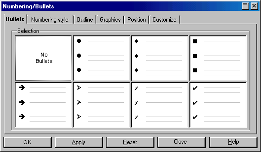
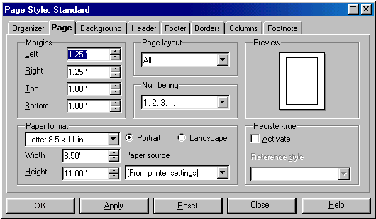
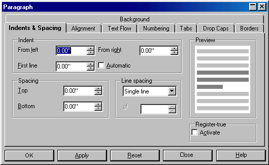
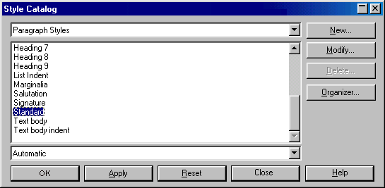
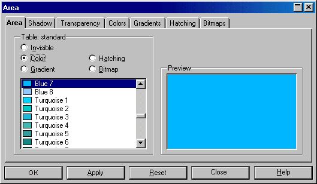
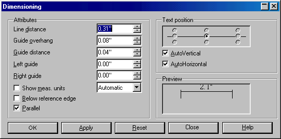
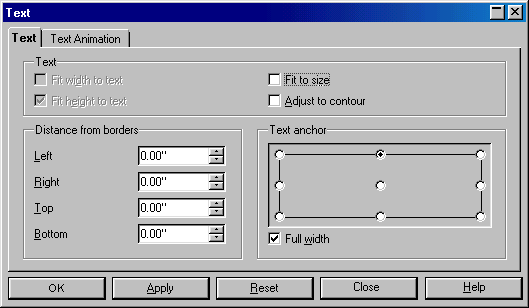
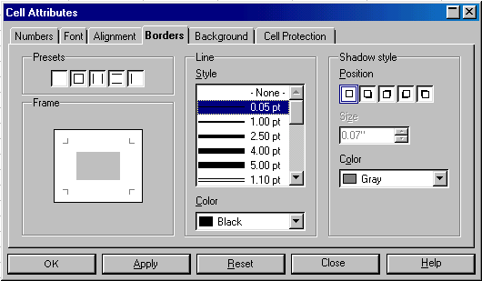
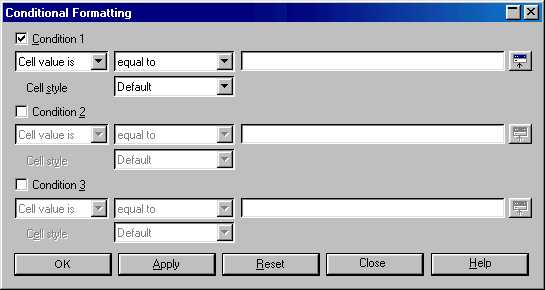

When a module (e.g., StarOffice / OpenOffice.org Writer) is not specified, it is because the function appears in more than one, or perhaps in all four (Writer, Calc, Draw, Impress). This list of proposed additions is not exhaustive. A proposal that contains a list of dialogs is currently in work. The following are screen-shots of the revised dialog boxes.
Format - Numbering / Bullets: The
"Remove" button should be exchanged for a "No Bullets"
option. Change the "OK" button to "Apply", and
the "Cancel" button to "Close". The buttons take
on the configuration below.

Format - Page: Change the "OK" button to "Apply", and the "Cancel" button to "Close". The buttons take on the configuration below.
Problem: Under Page layout you
can select for which layout the settings should be valid. Thus it can
happen, that the settings made are not immediately visible in the
document.

Format - Paragraph: Change the "OK" button to "Apply", and the "Cancel" button to "Close". The buttons take on the configuration below.

Format - Styles - Catalog:
Change the "OK" button to "Apply", the "Cancel"
button to "Close" and add a "Reset" button. These
buttons, along with the "Help" button, should appear at the
bottom of the dialog box to distinguish them from contextual buttons
such as "New", "Modify", "Delete", and
"Organizer". The buttons take on the configuration below.

Draw - Format - Area: Change
the "OK" button to "Apply", and the
"Cancel"button to "Close". The buttons
take on the configuration below.

Draw - Format - Dimensions:
Change the "OK" button to "Apply", the "Cancel"
button to "Close", and add a "Reset" button.
Align these buttons in the standard order at the bottom of the dialog
box. The buttons take on the configuration below.

Draw - Format - Text: Change
the "OK" button to "Apply", and the
"Cancel"button to "Close". The buttons
take on the configuration below.

Calc - Format - Cell: Change the
"OK" button to "Apply", and the "Cancel"
button to "Close". The buttons take on the configuration
below.

Calc - Format - Conditions: Change the "OK" button to "Apply", and the "Cancel" button to "Close". Align these buttons in the standard order, and add a "Reset" button to the right of those three buttons. The buttons take on the configuration below.
